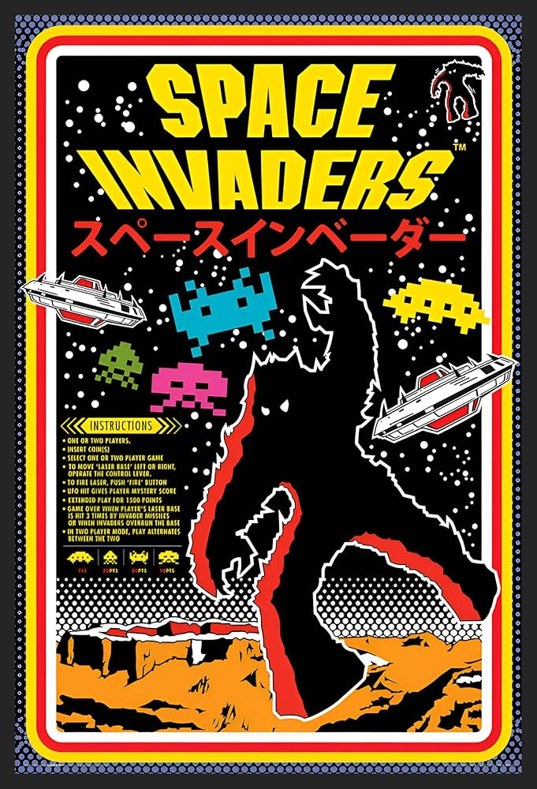

KEMBALI KE ZAMAN KEEMASAN GAME RETRO
Ditulis oleh Hanura Nur Ridwan. Pada 30 Oktober 2025
SEJARAH GAME RETRO
Game retro pertama kali muncul pada era 1950-an hingga 1970-an, ketika teknologi komputer masih sangat sederhana. Salah satu game paling awal yang dianggap sebagai cikal bakal dunia video game adalah Tennis for Two pada tahun 1958, diikuti oleh Pong buatan Atari tahun 1972 yang memperkenalkan permainan elektronik ke publik secara luas. Dari sinilah muncul budaya bermain game di mesin arcade yang mulai ramai di Amerika Serikat.
Memasuki tahun 1980-an, dunia game mengalami masa keemasan yang dikenal sebagai golden age of arcade games. Di masa ini lahirlah banyak game legendaris seperti Space Invaders, Pac-Man, dan Donkey Kong yang menggunakan grafis pixel sederhana namun sangat adiktif. Game pada masa itu biasanya dimainkan di mesin arcade dan fokus pada skor tertinggi, bukan tampilan visual yang realistis. Karena kesederhanaannya, game-game tersebut menjadi simbol hiburan populer di berbagai tempat, mulai dari pusat permainan hingga kafe.
Memasuki tahun 1990-an, perkembangan teknologi membuat game tidak lagi hanya dimainkan di arcade, tapi juga bisa dinikmati di rumah lewat konsol seperti Nintendo Entertainment System (NES), Sega Genesis, dan Super Nintendo (SNES). Dari sinilah muncul karakter ikonik seperti Mario, Sonic, dan Link yang menjadi bagian penting dari sejarah game. Walaupun kini dunia game sudah berkembang pesat dengan grafis modern, gaya retro masih tetap diminati hingga sekarang, baik karena nilai nostalgianya maupun kesederhanaan gameplay-nya. Banyak game modern seperti Shovel Knight, Celeste, dan Undertale yang masih mempertahankan gaya visual dan nuansa khas era 80-an.
CONTOH GAME RETRO




© 2025. Hanura Nur Ridwan